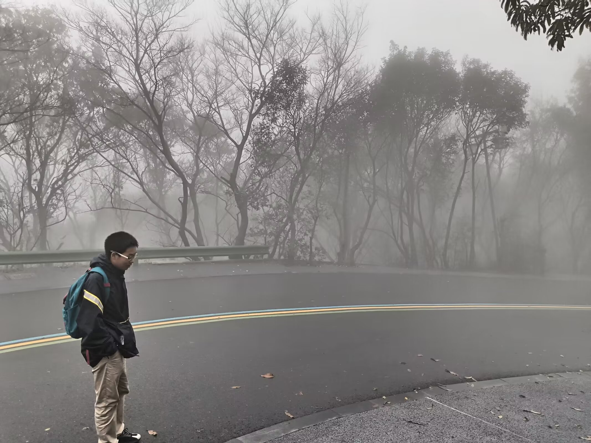
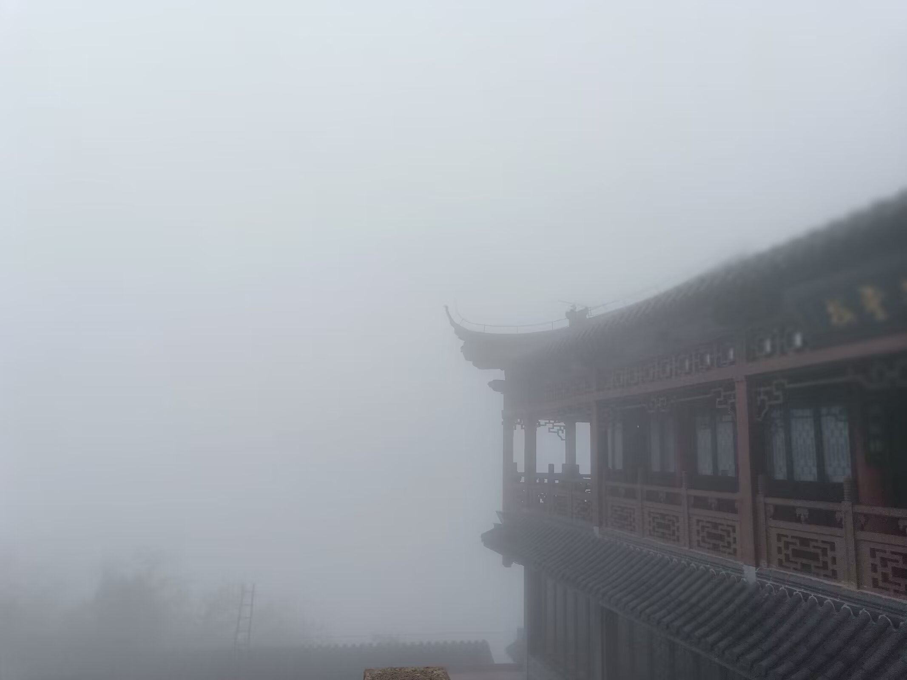
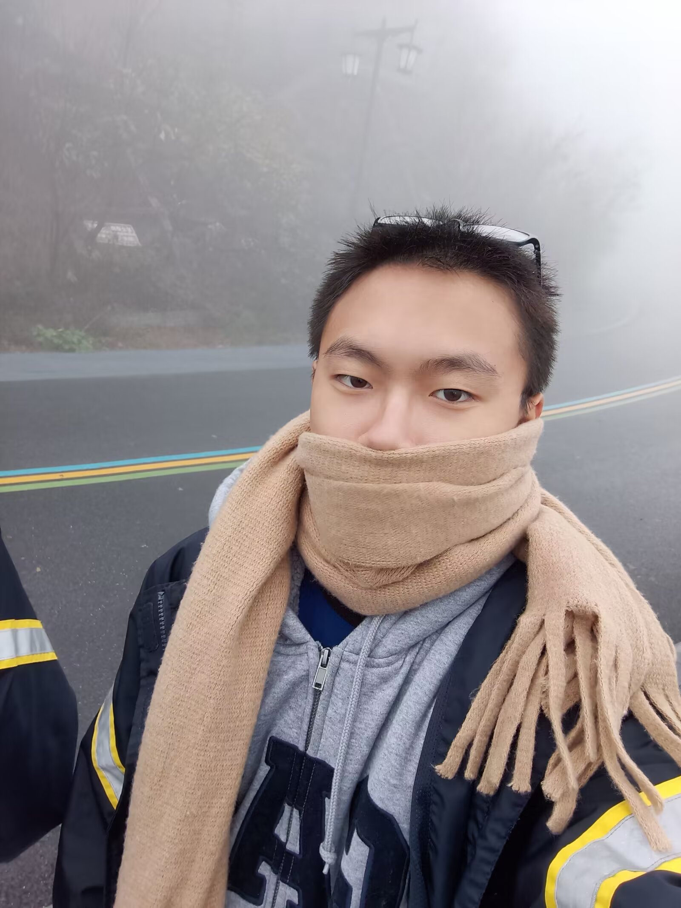

我的高一与高二生活
大概是一个月前，我回忆了我的高三时光，那是一段非常快乐的轻飘飘的日子，就像风筝一般，而这一篇文章是为了将我的高中生涯的前两年叙述出来，虽然我对前两年的记忆已经有点模糊了，但至少我还是能写一些东西的。
2022.7
高中的前奏开始于2022年，对于刚结束了人生中的第一场大型考试的我来说，那是一段短暂的放下所有的时光。记得在高中第一次补课开始前，我和我的初中同伴们疯狂的到处玩。大概是在6月19号左右吧，也就是出分前（2022.6.29前），那时候我们先是跑去了江科大二村，就在新村旁边，那里有一个小区活动室，我们一直打乒乓到10点左右，保安以扰民为由将我们赶出了这里，之后我们便骑车前往了恒美山庄，在里面的篮球场打球打到了12点，之后坐下聊了会天，便各自回家了。顺带一提我中考586分，刚好比一中镇中的分数线高，当时去学校拿分条时我依旧处于一个很模糊的状态。
7月10号开始了正式的补课，或者说是导学，我们暑期的导学是在高三楼进行的（导致了我正式开学时没有找到我们的正式的教学楼，也就是藏修楼）。我根据中考分数分到了当时的强化班，也就是高一11班，之后我的成绩在班里大概排中游左右吧。不对，好像跑题了
说回第一次补课时期，我高一分班前的同桌是一位来自润欣中学的学生，他给自己起了个外号叫阳子（因为他名字里有阳），阳子是个很有意思的人，虽然我们相知相识的时间不超过半年，但是在这段时间里他真的给我带来了很大的慰藉。第一次补课时期另一个人进入了我的视野，虽然认识他并成为挚友已经是后话了，但是那个时期我对这个人十分的恼火，毕竟本来是由我们两个人完成拖地作业的，但是此人先跑了，全教室的拖地人物就被我一个人被迫承包了。
随着10天的补课生活告一段落，7月的剩余时间我是在我外婆家度过的，那时的生活并不是像在家里那般，因此我也并没有什么过多的记忆，只是那时面艺世家的面仍记忆犹新，我仿佛还能感受到公公骑着电瓶车带我去他干保安的所在小区前的那个路口的店时吹过的风，我还能回忆起当时我正哼唱着past lives，那是一种恍惚的感觉，写到这里时才发现4年恍如隔世，高中宛若一梦。记得那时候我白天就躺在家里玩手机，或者刷b站，晚上去棋牌室蹭网玩手机。7月就这样过去。
2022.8
8月初那会我还呆在外公家，直到8月6号左右，那是我因为军训在即不得不回家准备，也是在6号晚上，我和初中同伴去逛了江大夜市，现在回想起来那大概是我们几个人最后聚在一起，我还记得我们几个人辗转多次买了大概很多倍蜜雪的柠檬水，我们还拼着买了几个生蚝，一人一个解决掉了它们。之后就是军训，军训时期发生的事我大都记不清了，只记得一些模糊的画面，只记得当时我们班入选了军体拳方阵。军训之后就是第二次补课，其实也可以看作时高中生活的正式开始，毕竟二次补课完就是9月份了，这期间唯一值得聊的也就是军训了，可惜我完全忘记了（。8月就这样过去了。
2022.9
9月是一个比较痛苦的月份，一方面我与某个朋友闹掰了，另一方面高中的节奏让我相当的窒息，不过第二点我当时并没有意识到就是了。另一件事就是运动会，作为新生的我们第一次参与了这个校级活动，只是当时被坏心情纠缠导致我完全没心情享受，好吧本来我也不会享受这种活动。9月就这样过去。
2022.10
10月的国庆长假是一个存档点的感觉，每次过了国庆，事情的发展就会加速，10月之后我终于算是脱离了9月的痛苦，生活也是欣欣向荣，也是在这个时期我接触了东方project，泰拉瑞亚。记得当时每晚我都拉着某人陪我玩泰拉虽然到目前为止。我们没有一次真正通关了过泰拉。不过说到国庆本身，我只对高二时期的国庆有较为深刻的印象，毕竟那个时期发生一些重要的事。10月在泰拉，东方和学习的日子里慢慢度过了。
2022.11
11月是秋游，百校联考的月份，我的第一次高中秋游是茅山之旅，到地方之后就是自由活动，直到下午集合，我记得那天我们爬到了山顶，并在上面拍了照留恋。



接着就是11月的百校联考（极其逆天的考试，金太阳的试题答案居然在开考前买到），我的数学只考了50多分，这届给我整自卑了……不过期末的时候又好起来了怎么又在聊成绩了，总之11月就这样过去。
2022.12
12月是一个特殊的月份，由于国家决定放开疫情管制，全员所以我们又回到了几年前在家听网课的日子，那是一段开心的日子。在三周之内，我与某人接近通关了泰拉的灾厄模组，当时的灾厄还是比较平衡的，制作组也没有爆出难堪的丑闻。也是在那段时间，我通关了消逝的光芒1，记得当时每天晚上都会玩一会这个。居家网课期间，由于懒得整理加上天气寒冷，我把所有的书本都堆在了地上，现在回想来还是挺搞笑的。中间我也利用患病导致嗓子痛来规避了一些提问，记得当时的作业还是比较多的，所以我就那个时期购买了打印机，虽然一直到我都到大一下了才开始真正派上用场。不过这些都是后话了。12月就在这样的欢快中度过。好吧并不是十分欢快，因为我们在24号左右就返校了，还是下午紧急返校，多这半天的休息机会都不给
2023.1
由于居家网课的缘故，我的分班考试被延迟到了年后，因此1月总体的压力并不算大，但是氛围还是比较紧张的。在这样的氛围中，我们迎来了23年的春节，春节后，我与某些人前往了苏宁观影（记得我们先去了大润发买零食，再回到了苏宁）。当时看的是熊出没当年的春节档。1月就这样过去了。
2023.2
23年的2月是离别的月份，过完年来学校时，分班考试已经迫在眼前了，考完试后紧接着就是选课分班，我还记得分班前的最后一节英语课上，涛涛教我们唱了Auld Lang Syne。那时的我相当的感动。同时，我也因为分班而与某人分开。2月就这样过去。
2023.3
老实说我记不清3月发生了什么事了，这个月暂且跳过。
2023.4
4月我唯一还有点印象的是春游，我们三个人在常州嬉戏谷玩了非常多的项目，我也是人生中第一次体验了过山车其实还是很刺激的尤其是对于前天熬夜了的我来说.不过4月份发生的其他事情我就一概记不住了。也暂且跳过。
2023.5
5月也不记得啥了,过。
2023.6 && 2023.7 && 2023.8
这三个月就连在一起说吧，毕竟暑假期间的事我都忘了差不多了，只模模糊糊记得一些事情，首先是在这个暑假补课期间我通关了Atri，挺感人的作品，暑假我还和某人经营了一个mc存档虽然因为重装系统和换电脑等原因这个档已经丢失了。记得还有一个夜晚，我从第一天晚9点左右开始写物理作业，直到第二天凌晨3点左右一口气写完了暑假的所有物理作业好吧中间还睡了1个小时不到。
2023.9 && 2023.10 && 2023.11
这三个月也连起来说吧，在这短短不到100天内，我对学校，对钟政鑫的愤怒达到了极点，也因此我与父母就晚自习发生了最为激烈的争吵。记得是国庆左右，我们年级部不仅占用假期时间排练，甚至在运动会前一天出尔反尔，本来定好的放学时间被延迟了，于是第二天我就直接请假，哪怕被记旷课我也要破坏表演的一致性。记得那个晚上我与父母就已经爆发了一些争吵，我还记得那个时候我边玩钢四边哭（当时玩的应该是苏联）。那天晚上我一直熬到了第二天早上2点半左右，之后一直睡到了当天的下午5点（应该也是我失去意识最长的一次）。说到钢四，高二的开始我就沉迷进了钢四，当时玩转了一些简单的国家，还是很开心的。之后就是我与父母的争吵了。三个月就这样过去。
2023.12
12月其实我也记不打大清晰了，这里直接跳过。